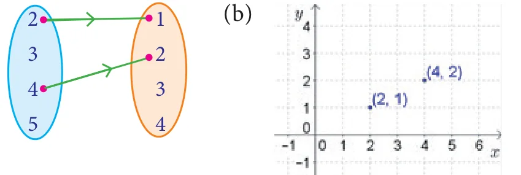
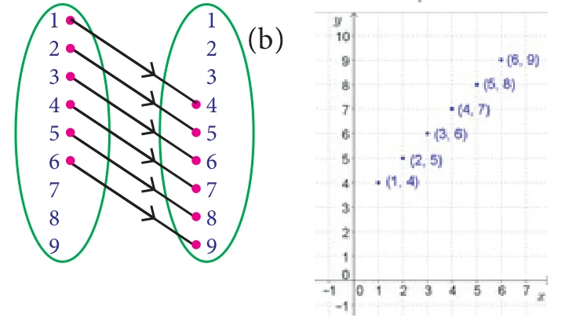
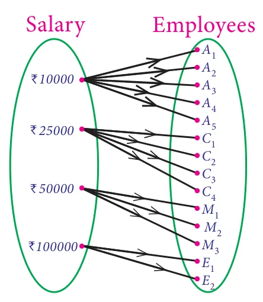
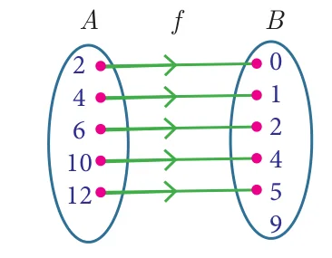
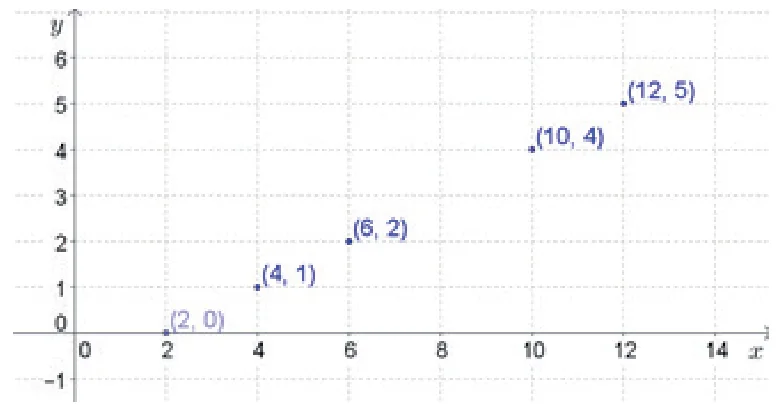
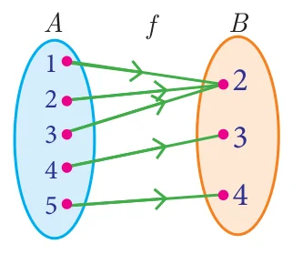
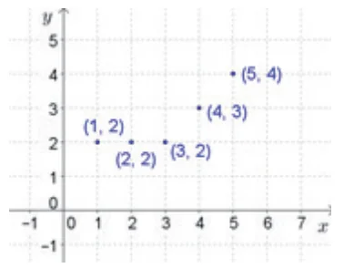

1. Relations and Functions
Exercise 1.1
1. (i) \(A \times B = \{(2,1),(2,-4),(-2,1),(-2,-4),(3,1),(3,-4)\}\)
\(A \times A = \{(2,2),(2,-2),(2,3),(-2,2),(-2,-2),(-2,3),(3,2),(3,-2),(3,3)\}\)
\(B \times A = \{(1,2),(1,-2),(1,3),(-4,2),(-4,-2),(-4,3)\}\)
(ii) \(A \times B = \{(p,p)(p,q)(q,p)(q,q)\}\); \(A \times A = \{(p,p),(p,q),(q,p),(q,q)\}\); \(B \times A = \{(p,p),(p,q),(q,p),(q,q)\}\)
(iii) \(A \times B = \{\ \}\); \(A \times A = \{(m,m),(m,n),(n,m),(n,n)\}\); \(B \times A = \{\ \}\)
2. \(A \times B = \{(1,2),(1,3),(1,5),(1,7),(2,2),(2,3),(2,5),(2,7),(3,2),(3,3),(3,5),(3,7)\}\)
\(B \times A = \{(2,1),(2,2),(2,3),(3,1),(3,2),(3,3),(5,1),(5,2),(5,3),(7,1),(7,2),(7,3)\}\)
3. \(A = \{3,4\}\ \ B = \{-2,0,3\}\) 5. true
Exercise 1.2
1. (i) Not a relation (ii) Not a relation (iii) Relation (iv) Not a relation
2. \(\{1,2,3,4,5,6\}, \{1,4,9,16,25,36\}\) 3. \(\{0,1,2,3,4,5\}, \{3,4,5,6,7,8\}\)
4. (i) (a) and (b):

(c) \(\{(2,1),(4,2)\}\)
(ii) (a) and (b):

(c) \(\{(1,4),(2,5),(3,6),(4,7),(5,8),(6,9)\}\)
5. \(\{(10000,A_1),(10000,A_2),(10000,A_3),(10000,A_4),(10000,A_5),(25000,C_1),(25000,C_2),(25000,C_3),(25000,C_4),(50000,M_1),(50000,M_2),(50000,M_3),(100000,E_1),(100000,E_2)\}\)

Exercise 1.3
1. \(\{1,2,3,4,\ldots\}\), \(\{1,2,3,4,\ldots\}\), \(\{2,4,6,8,\ldots\}\), yes. 2. yes
3. (i) 12 (ii) \(4a^2 - 10a + 6\) (iii) 0 (iv) \(x^2 - 7x + 12\)
4. (i) (a) 9 (b) 6 (c) 6 (d) 0 (ii) 9.5 (iii) (a) \(\{x \mid 0 \le x \le 10, x \in R\}\) (b) \(\{y \mid 0 \le y \le 9, y \in R\}\) (iv) 5
5. 2 6. (i) \(-2\) (ii) \(\frac{3}{2}\) (iii) 3 (iv) \(\frac{1}{2}\)
7. \(4x^3 - 96x^2 + 576x\) 8. 1 9. \(500t\)
10. (i) Yes (ii) 0.9, 24.5 (iii) 60.5 inches (iv) 32 cms
Exercise 1.4
1. (i) Not a function (ii) function (iii) Not a function (iv) function
2. (i) \(\{(2,0),(4,1),(6,2),(10,4),(12,5)\}\)
(ii)
| \(x\) | 2 | 4 | 6 | 10 | 12 |
|---|---|---|---|---|---|
| \(f(x)\) | 0 | 1 | 2 | 4 | 5 |
(iii) and (iv):


3. (i)

(ii)
| \(x\) | 1 | 2 | 3 | 4 | 5 |
|---|---|---|---|---|---|
| \(f(x)\) | 2 | 2 | 2 | 3 | 4 |
(iii)

6. (i) \(\{1,8,27,64\}\) (ii) one-one and into function
7. (i) Bijective function (ii) Not bijective function 8. a = \(-1\) or 1, b = 1
9. (i) 5 (ii) 2 (iii) \(-2.5\) (iv) 1
10. (i) 2 (ii) 10 (iii) 178 (iv) \(\frac{-9}{17}\) 11. Yes
12. (i) \(32^\circ F\) (ii) \(82.4^\circ F\) (iii) \(14^\circ F\) (iv) \(100^\circ C\) (v) \(-40^\circ\)
Exercise 1.5
1. (i) \(x^2 - 6,\ (x - 6)^2\); not equal (ii) \(\frac{2}{2x^2 - 1}, \frac{8}{x^2} - 1\); not equal (iii) \(\frac{3 - x}{3}, \frac{9 - x}{3}\); not equal (iv) \(x - 1,\ x - 1\); equal (v) \(4x^2 + 8x + 3,\ 4x^2\); not equal
2. (i) \(-5\) (ii) \(\frac{-5}{3}\) 4. \(a = \pm 2\)
5. \(\{y \mid y = 2x^2 + 1,\ x \in \mathbb{N}\}\); \(\{y \mid y = (2x + 1)^2,\ x \in \mathbb{N}\}\)
6. (i) \(x^4 - 2x^2\) (ii) \(\left[x^4 - 2x^2\right]^2 - 1\)
7. \(f\) is one-one, g is not one-one, \(f \circ g\) is not one-one 9. \(-4x - 1\)
Exercise 1.6
| 1 | 2 | 3 | 4 | 5 | 6 | 7 | 8 | 9 | 10 | 11 | 12 | 13 | 14 | 15 |
|---|---|---|---|---|---|---|---|---|---|---|---|---|---|---|
| (C) | (C) | (A) | (B) | (C) | (D) | (C) | (A) | (C) | (C) | (A) | (D) | (C) | (B) | (D) |
Unit exercise-1
1. 1, 2 and \(-5\), 1 2. \(\{-1,0,1\}\), \(\{(-1,-1),(-1,1),(0,-1),(0,0),(1,-1),(1,0),(1,1)\}\)
3. (i) 4 (ii) \(\sqrt{2}\) (iii) \(\sqrt{a}\)
4. \(\{(9,3),(10,5),(11,11),(12,3),(13,13),(14,7),(15,5),(16,2),(17,17)\}\), \(\{2,3,5,7,11,13,17\}\)
5. \(-1 \le x \le 1\) 9. (i) \(\frac{-5}{6}\) (ii) \(2(x + 1)\) (iii) \([2, \infty)\) (iv) R 10. (i) \(R - \{9\}\) (ii) R
2. Numbers and Sequences
Exercise 2.1
1. 2, 5, 8, 11, … 2. 25, 7 6. (i) 4 (ii) 51 (iii) 144 (iv) 6 7. 174 8. \(2, -1\) 9. 6
Exercise 2.2
1. Even number 2. No value 3. 10101 4. 9, 3 5. 2,3,5,7 and 3,4,2,1 6. 2040, 34 7. 999720 8. 3647 9. 2520
Exercise 2.3
1. (i) 7 (ii) 5 (iii) 2 (iv) 7 (v) 2
2. 3 3. 2, 8, 14, … 4. 8, 19, 30, … 5. 11 a.m 6. 8 a.m 7. Friday 9. 2 10. 6 a.m, Monday
Exercise 2.4
1. (i) 216, 648, 1944 (ii) \(-7, -11, -15\) (iii) \(\frac{4}{25}, \frac{5}{36}, \frac{6}{49}\)
2. (i) \(-1, 6, 25, 62\) (ii) \(2, -6, 12, -20\) (iii) \(-4, 2, 12, 26\)
3. (i) \(n^2 + 1\) (ii) \(\frac{n - 1}{n}\) (iii) \(5n - 2\)
4. (i) \(\frac{15}{4}, \frac{13}{3}\) (ii) \(-12, -117\) 5. \(\frac{63}{11}, \frac{225}{31}\) 6. 1, 1, 3, 7, 17, 41
Exercise 2.5
1. (i) A.P (ii) not an A.P (iii) A.P (iv) A.P (v) not an A.P
2. (i) 5, 11, 17, … (ii) 7, 2, \(-3\), … (iii) \(\frac{3}{4}, \frac{5}{4}, \frac{7}{4}, \ldots\)
3. (i) \(-1, 2\) (ii) \(-3, -7\) 4. \(-83\) 5. 15 6. 93, 99 8. 4 9. 3, 17, 31 10. 78
11. 2, 9, 16 12. 5:7 13. \(-3^\circ\)C, \(0^\circ\)C, \(3^\circ\)C, \(6^\circ\)C, \(9^\circ\)C 14. 31 years
Exercise 2.6
1. (i) 3240 (ii) 999 (iii) 721 2. 20 3. 1540 5. 612.5 6. 50625 7. 168448
8. (i) ₹ 45750 (ii) ₹ 5750 9. 20 months 10. (i) 42 (ii) 2130 12. \(\frac{6}{a + b}(24a - 13b)\)
Exercise 2.7
1. (i) G.P (ii) not a G.P (iii) G.P (iv) G.P (v) G.P (vi) not a G.P (vii) G.P
2. (i) 6, 18, 54 (ii) \(\sqrt{2}, 2, 2\sqrt{2}\) (iii) 1000, 400, 160
3. 1 4. \(-18\) 5. (i) 12 (ii) 7 6. \(5 \times (3^{11})\)
7. 3072 9. \(\frac{9}{2}\), 3, 2 (or) 2, 3, \(\frac{9}{2}\) 10. ₹ 76577 11. ₹23820, ₹24040
Exercise 2.8
1. (i) \(\frac{25}{8}\left[1 - \left(-\frac{3}{5}\right)^n\right]\) (ii) \(\frac{1024}{3}\left[1 - \left(\frac{1}{4}\right)^n\right]\) 2. 1820 3. 12
4. (i) \(\frac{27}{2}\) (ii) 63 5. \(\frac{1}{4}\) 6. (i) \(\frac{4}{9}n - \dfrac{4\left(1 - \left(\frac{1}{10}\right)^n\right)}{81}\) (ii) \(\frac{10(10^n - 1)}{27} - \frac{n}{3}\)
7. 3069 8. ₹ 174760 9. \(\frac{41}{333}\)
Exercise 2.9
1. (i) 1830 (ii) 1584 (iii) 3003 (iv) 1240 (v) 3256 (vi) 42075 (vii) 1296
2. 105625 3. 210 4. 15 5. 9 6. 4615 \(cm^2\) 7. (i) \(4n^3 + 3n^2\) (ii) 2240
Exercise 2.10
| 1 | 2 | 3 | 4 | 5 | 6 | 7 | 8 | 9 | 10 | 11 | 12 | 13 | 14 | 15 |
|---|---|---|---|---|---|---|---|---|---|---|---|---|---|---|
| (C) | (A) | (B) | (C) | (D) | (A) | (D) | (C) | (A) | (C) | (C) | (D) | (B) | (B) | (C) |
Unit exercise-2
2. (i) 35 litres (ii) 5 (iii) 3 3. 1 6. \(-78\) 8. ₹1200 9. \(\sqrt{2}, \sqrt{6}, 3\sqrt{2}, \ldots\) 10. ₹27636
3. Algebra
Exercise 3.1
1. (i) \(2, -1, 4\) (ii) \(\frac{1}{2}, \frac{1}{3}, \frac{1}{4}\) (iii) 35, 30, 25
2. (i) infinitely many solution (ii) no solution (iii) unique solution
3. 24 years, 51 years, 84 years 4. 137 5. 7, 3, 2
Exercise 3.2
1. (i) \(x^2 + 2x - 3\) (ii) \(x^2 + 1\) (iii) \(x(x^2 + 4x + 4)\) (iv) \(3(x^2 + 1)\)
2. (i) \(8x^3y^2\) (ii) \(-36a^3b^2c\) (iii) \(-48m^2n^2\) (iv) \((p - 1)(p - 2)(p + 2)\) (v) \(4(x + 3)(2x + 1)(x - 3)\) (vi) \(2^3x^2(2x - 3y)^3(4x^2 + 6xy + 9y^2)\)
Exercise 3.3
1. (i) \(7xy,\ 105x^2y^2\) (ii) \((x + 1),\ (x - 1)(x + 1)(x^2 + x + 1)(x^2 - x + 1)\) (iii) \(x(x + y),\ xy(x + y)\)
2. (i) \((a + 6)(a - 2)(a - 3)\) (ii) \(x(x - 3a)^2(x^2 + 3ax + 9a^2)\)
3. (i) \(4x^2(x - 1)\) (ii) \(x^2 - xy + y^2\) 4. (i) \((a + 2)(a - 7)\) (ii) \((x^2 - y^2)(x^2 + xy + y^2)\)
Exercise 3.4
1. (i) \(\frac{x - 1}{x}\) (ii) \(\frac{x - 9}{x - 2}\) (iii) \(\frac{9}{x - 1}\) (iv) \(\frac{p + 5}{2p(p - 4)}\)
2. (i) \(-5, 5\) (ii) 2, 3 (iii) 1 (iv) \(0, -3, 2\)
Exercise 3.5
1. (i) \(\frac{3x^3z}{5y^3}\) (ii) \(p + 4\) (iii) \(\frac{3t^2}{4}\) 2. (i) \(\frac{3x - 4y}{2x - 5}\) (ii) \(\frac{x^2 + xy + y^2}{3(x + 2y)}\)
3. (i) \(-5\) (ii) \(\frac{b - 4}{b + 2}\) (iii) \(\frac{3y}{x - 3}\) (iv) \(\frac{4(2t - 1)}{3}\) 4. \(\frac{4}{9}\) 5. \(x^2 + 4x + 4\)
Exercise 3.6
1. (i) \(\frac{2x}{x - 2}\) (ii) \(\frac{2x^2 + 2x - 7}{(x + 3)(x - 2)}\) (iii) \(x^2 + xy + y^2\) 2. (i) \(\frac{2(x - 2)}{x - 4}\) (ii) \(\frac{1 - x}{1 + x}\)
3. \(\frac{2x^3 + 1}{(x^2 + 2)^2}\) 4. \(\frac{x + 1}{x^2 - 2x + 4}\) 5. \(\frac{(4x^2 - 1)}{2(4x^2 + 1)}\) 7. 2 hrs 24 minutes 8. 30 kgs, 20 kgs
Exercise 3.7
1. (i) \(2\left|\frac{y^4z^6}{x^2}\right|\) (ii) \(4\left|\frac{\sqrt{7}x + \sqrt{2}}{4x - 1}\right|\) (iii) \(\frac{11}{9}\left|\frac{(a + b)^4(x + y)^4}{(a - b)^6}\right|\)
2. (i) \(|2x + 5|\) (ii) \(|3x - 4y + 5z|\) (iii) \(|(x - 2)(7x + 1)(4x - 1)|\) (iv) \(\frac{1}{6}|(4x + 3)(3x + 2)(x + 2)|\)
Exercise 3.8
1. (i) \(|x^2 - 6x + 3|\) (ii) \(|2x^2 - 7x - 3|\) (iii) \(|4x^2 + 1|\) (iv) \(|11x^2 - 9x - 12|\)
2. (i) \(49, -42\) (ii) 144, 264 3. (i) 30, 9 (ii) \(24, -32\)
Exercise 3.9
1. (i) \(x^2 + 9x + 20 = 0\) (ii) \(3x^2 - 5x + 12 = 0\) (iii) \(2x^2 + 3x - 2 = 0\) (iv) \(x^2 + (2 - a)^2x + (a + 5)^2 = 0\)
2. (i) \(-3, -28\) (ii) \(-3, 0\) (iii) \(-\frac{1}{3}, -\frac{10}{3}\) (iv) \(\frac{1}{3}, \frac{-4}{3}\)
Exercise 3.10
1. (i) \(-\frac{1}{4}, 2\) (ii) \(-2, \frac{9}{2}\) (iii) \(-2, 9\) (iv) \(-\sqrt{2}, \frac{-5}{\sqrt{2}}\) (v) \(\frac{1}{4}, \frac{1}{4}\) 2. 6
Exercise 3.11
1. (i) \(\frac{2}{3}, \frac{2}{3}\) (ii) \(-1, 3\) 2. (i) \(2, \frac{1}{2}\) (ii) \(\frac{3 + \sqrt{3}}{\sqrt{2}}, \frac{3 - \sqrt{3}}{\sqrt{2}}\) (iii) \(-1, \frac{23}{3}\) (iv) \(\frac{a + b}{6}, \frac{a - b}{6}\)
3. 3.75 seconds
Exercise 3.12
1. \(5, -\frac{1}{5}\) 2. 1.5 m 3. 45 km/hr 4. 20 years, 10 years 5. Yes, 12 m, 16 m 6. 72 7. 28 m, 42 m 8. 2 m 9. 7 cm
Exercise 3.13
1. (i) Real and unequal (ii) Real and unequal (iii) Not real (iv) Real and equal (v) Real and equal
2. (i) 2, 3 (ii) \(1, \frac{1}{9}\)
Exercise 3.14
1. (i) \(\frac{(\alpha + \beta)^2 - 2\alpha\beta}{3\alpha\beta}\) (ii) \(\frac{\alpha + \beta}{(\alpha\beta)^2}\) (iii) \(9\alpha\beta - 3(\alpha + \beta) + 1\)
(iv) \(\frac{(\alpha + \beta)^2 - 2\alpha\beta + 3(\alpha + \beta)}{\alpha\beta}\) 2. (i) \(\frac{7}{5}\) (ii) \(\frac{29}{10}\) (iii) \(\frac{13}{6}\)
3. (i) \(x^2 - 44x + 16 = 0\) (ii) \(x^2 - 3x - 1 = 0\) (iii) \(x^2 - 24x - 64 = 0\)
4. \(-15, 15\) 5. \(-24, 24\) 6. \(-36\)
Exercise 3.15
1. ₹6500, ₹1250 2. \(y = 8,\ x = 4\) 3. \(y = 4.5,\ x = 15\) 4. \(y = 18\) minutes, 10 pipes 5. 360, ₹30 6. ₹90, 10 hrs
Exercise 3.16
1. (i) Real and unequal roots (ii) Real and equal roots (iii) No real roots (iv) Real and unequal roots (v) Real and equal roots (vi) Real and unequal roots
2. \(-3, 4\) 3. No real roots 4. \(-1\) 5. \(-4, 1\) 6. \(-2, 7\) 7. \(-1, 3\) 8. \(-2, 3\)
Exercise 3.17
1. (i) 16 (ii) \(4 \times 4\) (iii) \(\sqrt{7}, \frac{\sqrt{3}}{2}, 5, 0, -11, 1\)
2. \(1 \times 18,\ 2 \times 9,\ 3 \times 6,\ 6 \times 3,\ 9 \times 2,\ 18 \times 1\) and \(1 \times 6,\ 2 \times 3,\ 3 \times 2,\ 6 \times 1\)
3. (i) \(\begin{pmatrix} 1 & 3 & 5 \\ 0 & 2 & 4 \\ 1 & 1 & 3 \end{pmatrix}\) (ii) \(\begin{pmatrix} \frac{8}{3} & 9 & \frac{64}{3} \\ 9 & \frac{64}{3} & \frac{125}{3} \\ \frac{64}{3} & \frac{125}{3} & 72 \end{pmatrix}\) 4. \(\begin{pmatrix} 5 & 1 & 3 \\ 4 & -7 & 8 \\ 3 & 9 & 2 \end{pmatrix}\)
5. \(\begin{pmatrix} -\sqrt{7} & \sqrt{5} & -\sqrt{3} \\ 3 & -2 & 5 \end{pmatrix}\) 7. (i) 3, 12, 3 (ii) 4, 2, 0 or 2, 4, 0 (iii) 2, 4, 3
Exercise 3.18
3. \(\begin{pmatrix} 5 & 0 \\ \frac{3}{2} & \frac{9}{2} \end{pmatrix}, \begin{pmatrix} 2 & 0 \\ \frac{3}{2} & \frac{1}{2} \end{pmatrix}\) 4. (i) \(\begin{pmatrix} 7 & -17 & -37 \\ -39 & -11 & -26 \end{pmatrix}\) (ii) \(\begin{pmatrix} -63 & -15 & -45 \\ 15 & -27 & -60 \end{pmatrix}\)
5. (i) \(4, -10, 12\) (ii) \(-10, 14, 10\) 6. 4, 6 7. 4 8. \(-1, 5\) and \(-2, 4\)
Exercise 3.19
1. \(3 \times 3,\ 4 \times 2,\ 4 \times 2,\ 4 \times 1,\ 1 \times 3\) 2. \(p \times r\), not defined 3. 7, 10
4. \(\begin{pmatrix} 12 & 19 \\ 10 & 3 \end{pmatrix}, \begin{pmatrix} -10 & -4 \\ 24 & 25 \end{pmatrix},\ AB \ne BA\)
Exercise 3.20
| 1 | 2 | 3 | 4 | 5 | 6 | 7 | 8 | 9 | 10 |
|---|---|---|---|---|---|---|---|---|---|
| (D) | (A) | (B) | (A) | (B) | (C) | (D) | (B) | (C) | (C) |
| 11 | 12 | 13 | 14 | 15 | 16 | 17 | 18 | 19 | 20 |
|---|---|---|---|---|---|---|---|---|---|
| (B) | (A) | (B) | (D) | (B) | (B) | (D) | (B) | (C) | (A) |
Unit exercise-3
1. 6, 2, 1 2. 42, 78, 30 3. 153 4. \((ky + x)(k^2x^2 - y^2)\) 5. \(x^2 + 2x + 1\) 6. (i) \(x^a - 2\) (ii) \(-x + \frac{5}{2}\)
7. \(\frac{(p + q + r)^2}{2qr}\) 8. 11 hrs, 22 hrs, 33 hrs 9. \(|17x^2 - 18x + 19|\) 10. 3
11. 14 km/hr 12. 120 m, 40 m 13. 14 minutes 14. 25 15. (i) \(x^2 - 6x + 11 = 0\)
(ii) \(3x^2 - 2x + 1 = 0\) 16. \(3, \frac{9}{4}\) 17. (i) \(\begin{pmatrix} 750 & 1500 & 2250 \\ 3750 & 2250 & 750 \end{pmatrix}\) (ii) \(\begin{pmatrix} 8000 & 16000 & 24000 \\ 40000 & 24000 & 8000 \end{pmatrix}\)
18. \(\sin\theta\) 19. 8, 4 20. \(\begin{pmatrix} 122 & 71 \\ -58 & -34 \end{pmatrix}\)
4. Geometry
Exercise 4.1
1. (i) Not similar (ii) Similar, 2.5 2. 3.3 m 3. 42 m 5. \(\frac{15}{13}, \frac{36}{13}\) 6. 5.6 cm, 3.25 cm 8. 2.8 cm 9. 2 m
Exercise 4.2
1. (i) 6.43 cm (ii) 1 2. 60 cm 5. 4 cm, 4 cm 8. (i) Not a bisector (ii) Bisector 12. 2.1 cm
Exercise 4.3
1. 30 m 2. 1 mile 3. 21.74 m 4. 12 cm, 5 cm 5. 10 m, 24 m, 26 m 6. 0.8 m
Exercise 4.4
1. 7 cm 2. 2 cm 3. 7 cm, 5 cm, 3 cm 4. \(30^\circ\) 5. \(130^\circ\) 6. \(\frac{20}{3}\) cm 7. 10 cm 8. 4.8 cm 10. 2 cm 13. 8.7 cm 14. 10.3 cm 15. 4 cm 16. 6.3 cm
Exercise 4.5
| 1 | 2 | 3 | 4 | 5 | 6 | 7 | 8 | 9 | 10 | 11 | 12 | 13 | 14 | 15 |
|---|---|---|---|---|---|---|---|---|---|---|---|---|---|---|
| (C) | (B) | (D) | (A) | (D) | (A) | (B) | (C) | (A) | (D) | (B) | (B) | (B) | (D) | (A) |
Unit exercise-4
2. \(\frac{12}{5}\) cm, \(\frac{10}{3}\) cm 5. \(20\sqrt{13}\) km 7. 10 m 8. shadow \(= \frac{4}{11} \times (\text{distance})\) 10. 6 units
5. Coordinate Geometry
Exercise 5.1
1. (i) 24 sq. units (ii) 11.5 sq. units 2. (i) collinear (ii) collinear
3. (i) 44 (ii) 13 4. (i) 0 (ii) \(\frac{1}{2}\) or \(-1\) 5. (i) 35 sq. units (ii) 34 sq. units
6. \(-5\) 7. \(2, -1\) 8. 24 sq. units, \(\text{area}(\Delta ABC) = 4 \times \text{area}(\Delta PQR)\) 9. 122 sq.units
10. 10 cans 11. (i) 3.75 sq. units (ii) 3 sq. units (iii) 13.88 sq. units
Exercise 5.2
1. (i) undefined (ii) 0 2. (i) \(0^\circ\) (ii) \(45^\circ\) 3. (i) \(\frac{1}{\sqrt{5}}\) (ii) \(-\cot\theta\)
4. 3 6. 7 7. \(\frac{17}{2}\) 8. 4 9. (i) yes (ii) yes 11. 5, 2
Exercise 5.3
1. (i) \(2y + 3 = 0\) (ii) \(2x - 5 = 0\) 2. \(1, 45^\circ, \frac{5}{2}\)
3. \(x - \sqrt{3}\,y - 3\sqrt{3} = 0\) 4. \(\frac{\sqrt{3} + 3}{2}, \frac{3 + 3\sqrt{3}}{-2}\) 5. \(-5\) 6. \(x - y - 16 = 0\)
7. (i) \(16x - 15y - 22 = 0\) (ii) \(4x - 9y + 19 = 0\) 8. \(15x - 11y + 46 = 0\)
9. \(x + 4y - 14 = 0,\ 3x + 5y - 28 = 0\) 10. \(5x + 4y - 3 = 0\)
11. (i) 1 (ii) 7.5 seconds (iii) 10 seconds
12. (i) \(3x - 2y - 12 = 0\) (ii) \(3x - 20y + 15 = 0\) 13. (i) \(2, -3\) (ii) \(-3, -4\)
14. (i) \(5x + 2y + 3 = 0\) (ii) \(x + y + 4 = 0\)
Exercise 5.4
1. (i) 0 (ii) undefined 2. (i) 0.7 (ii) 0 3. (i) Parallel (ii) Perpendicular 4. 4 5. \(3x + 4y + 7 = 0\)
6. \(2x + 5y - 2 = 0\) 7. \(2x + 5y + 6 = 0,\ 5x + y - 48 = 0\) 8. \(5x - 3y - 8 = 0\)
9. \(13x + 5y - 18 = 0\) 10. \(49x + 28y - 156 = 0\) 11. \(31x + 15y + 30 = 0\) 12. \(4x + 13y - 9 = 0\)
Exercise 5.5
| 1 | 2 | 3 | 4 | 5 | 6 | 7 | 8 | 9 | 10 | 11 | 12 | 13 | 14 | 15 |
|---|---|---|---|---|---|---|---|---|---|---|---|---|---|---|
| (B) | (A) | (B) | (C) | (C) | (D) | (B) | (B) | (A) | (C) | (C) | (A) | (B) | (B) | (B) |
Unit exercise-5
1. Rhombus 2. \(\left(\frac{7}{2}, \frac{13}{2}\right)\) 3. 0 sq.units 4. \(-5\) 6. \(2x - 3y - 6 = 0,\ 3x - 2y + 6 = 0\)
7. 1340 litres 8. \((-1, -4)\) 9. \(13x + 13y - 6 = 0\) 10. \(119x + 102y - 125 = 0\)
6. Trigonometry
Exercise 6.2
1. \(30^\circ\) 2. 24 m 3. 3.66 m 4. 1.5 m 5. (i) 7 m (ii) 16.39 m 6. 10 m
Exercise 6.3
1. 150 m 2. 50 m 3. 32.93 m 4. 2078.4 m 6. 30 Feet / m
Exercise 6.4
1. 35.52 m 2. 69.28 m, 160 m 4. 150 m, yes
5. (i) 264 m (ii) 198 m (iii) 114.31 m 6. (i) 2.91 km (ii) 6.93 km
Exercise 6.5
| 1 | 2 | 3 | 4 | 5 | 6 | 7 | 8 | 9 | 10 | 11 | 12 | 13 | 14 | 15 |
|---|---|---|---|---|---|---|---|---|---|---|---|---|---|---|
| (B) | (D) | (B) | (A) | (B) | (B) | (A) | (C) | (B) | (D) | (B) | (B) | (D) | (B) | (A) |
Unit exercise-6
5. 29.28 m/s 6. 1.97 seconds (approx) 7. (i) 24.58 km (approx) (ii) 17.21 km (approx) (iii) 21.41 km (approx) (iv) 23.78 km (approx)
8. 200 m 9. 39.19 m
7. Mensuration
Exercise 7.1
1. 25 cm, 35 cm 2. 7 cm, 35 cm 3. 2992 sq.cm 4. CSA of the cone when rotated about PQ is larger. 5. 18.25 m
6. 28 caps 7. \(\sqrt{5} : 9\) 8. 56.25% 9. ₹ 302.72 10. ₹ 1357.72
Exercise 7.2
1. 4.67 m 2. 1 cm 3. 652190 \(cm^3\) 4. 63 minutes (approx)
5. 100.58 6. 5:7 7. 64:343 9. 4186.29 \(cm^3\) 10. ₹ 418.36
Exercise 7.3
1. 1642.67 \(cm^3\) 2. 66 \(cm^3\) 3. 2.46 \(cm^3\) 4. 905.14 \(cm^3\)
5. 77.78 \(mm^3\) 6. 332.5 \(cm^2\) 7. (i) \(4\pi r^2\) sq. units (ii) \(4\pi r^2\) sq. units (iii) 1:1
Exercise 7.4
1. 36 cm 2. 2 hrs 3. \(\frac{h}{3x^2}\) 4. 6 cm 5. 1812000 \(cm^3\) / 1812 litre 6. 1.33 cm 7. 1 cm 8. 100%
Exercise 7.5
| 1 | 2 | 3 | 4 | 5 | 6 | 7 | 8 | 9 | 10 | 11 | 12 | 13 | 14 | 15 |
|---|---|---|---|---|---|---|---|---|---|---|---|---|---|---|
| (D) | (A) | (A) | (B) | (C) | (B) | (B) | (C) | (C) | (A) | (D) | (A) | (A) | (B) | (D) |
Unit exercise-7
1. 48000 words 2. 27 minutes (approx.) 3. \(\frac{1}{3}\pi r^3\) cu.units 4. 782.57 sq.cm
5. 450 coins 6. 4.8 cm 7. ₹ 6800 8. 2 cm 9. 17 cm 10. 2794.18 \(cm^3\)
8. Statistics and Probability
Exercise 8.1
1. (i) 62; 0.33 (ii) 47.8; 0.64 2. 50.2 3. 250 4. 2.34
5. 222.22, 14.91 6. 6.9 7. 6.05 8. 4.5 9. 1.2, 1.44 10. 7.76 11. 14.6
12. 6 13. 1.24 14. 60.5, 14.61 15. 6 and 8
Exercise 8.2
1. 52% 2. 4.69 3. 7.2 4. 180.28% 5. 14.4% 6. 10.07% 7. Vidhya 8. Social, Science
Exercise 8.3
1. \(\{HHH, HHT, HTH, HTT, THH, THT, TTH, TTT\}\)
2. \(\{(1,2),(1,3),(1,4),(1,5),(1,6),(2,1),(2,3),(2,4),(2,5),(2,6),(3,1),(3,2),(3,4),(3,5),(3,6),(4,1),(4,2),(4,3),(4,5),(4,6),(5,1),(5,2),(5,3),(5,4),(5,6),(6,1),(6,2),(6,3),(6,4),(6,5)\}\)
3. (i) \(\frac{15}{32}\) (ii) 340 4. \(\frac{3}{8}\) 5. (i) \(\frac{9}{1000}\) (ii) \(\frac{8}{999}\) 6. (i) \(\frac{1}{4}\) (ii) \(x = 4\)
7. (i) \(\frac{1}{6}\) (ii) \(\frac{1}{6}\) (iii) \(\frac{5}{12}\) (iv) 0 8. (i) \(\frac{1}{8}\) (ii) \(\frac{7}{8}\) (iii) \(\frac{1}{2}\) (iv) \(\frac{7}{8}\)
9. (i) \(\frac{3}{13}\) (ii) \(\frac{1}{2}\) (iii) \(\frac{10}{13}\) (iv) \(\frac{6}{13}\)
10. 12 11. \(\frac{157}{600}\) 12. (i) \(\frac{1}{6}\) (ii) \(\frac{5}{6}\) (iii) \(\frac{5}{18}\)
13. (i) \(\frac{1}{8}\) (ii) \(\frac{3}{4}\) (iii) \(\frac{1}{8}\)
Exercise 8.4
1. \(\frac{11}{15}\) 2. (i) 0.58 (ii) 0.52 (iii) 0.74 3. 0.1 4. 1.2 5. 0.2
6. \(\frac{5}{9}\) 7. \(\frac{13}{18}\) 8. \(\frac{7}{8}\) 9. \(\frac{73}{280}\) 10. \(\frac{17}{40}\) 11. 1 12. \(\frac{11}{48}, \frac{11}{24}, \frac{11}{16}\) 13. \(\frac{29}{35}\)
Exercise 8.5
| 1 | 2 | 3 | 4 | 5 | 6 | 7 | 8 | 9 | 10 | 11 | 12 | 13 | 14 | 15 |
|---|---|---|---|---|---|---|---|---|---|---|---|---|---|---|
| (C) | (A) | (C) | (B) | (C) | (D) | (B) | (A) | (A) | (B) | (B) | (B) | (C) | (C) | (D) |
Unit exercise-8
1. 8, 12 2. 5.55 3. 7 4. 81 5. 5.17, 1.53 6. City A 7. 60, 40
8. \(\frac{1}{9}\) 9. \(\frac{3}{4}\) 10. 10 11. \(\frac{13}{20}\)